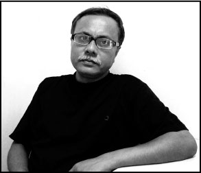

A Note on the Author

abisankar Bal is a Bangla novelist and short-story writer, with over fifteen novels, five short-story collections, one volume of poetry, and one volume of literary essays. He has edited a collection of Saadat Hasan Manto’s writings translated into Bangla.
Born in 1962, he has been writing for over thirty years. His novel The Biography of Midnight won the West Bengal Government’s Sutapa Roychowdhury Memorial Prize. Dozakhnama, acknowledged by the late doyen of Bengali literature Sunil Gangopadhyay as the finest novel of 2010, won the West Bengal Government’s Bankimchandra Smriti Puraskar.
A journalist by profession, Bal lives in Kolkata and passionately follows literature, music, painting, and world cinema. His next novel is based on the life of the Sufi poet Jalaluddin Rumi, and told through the imagined eyes of Ibn Batuta.